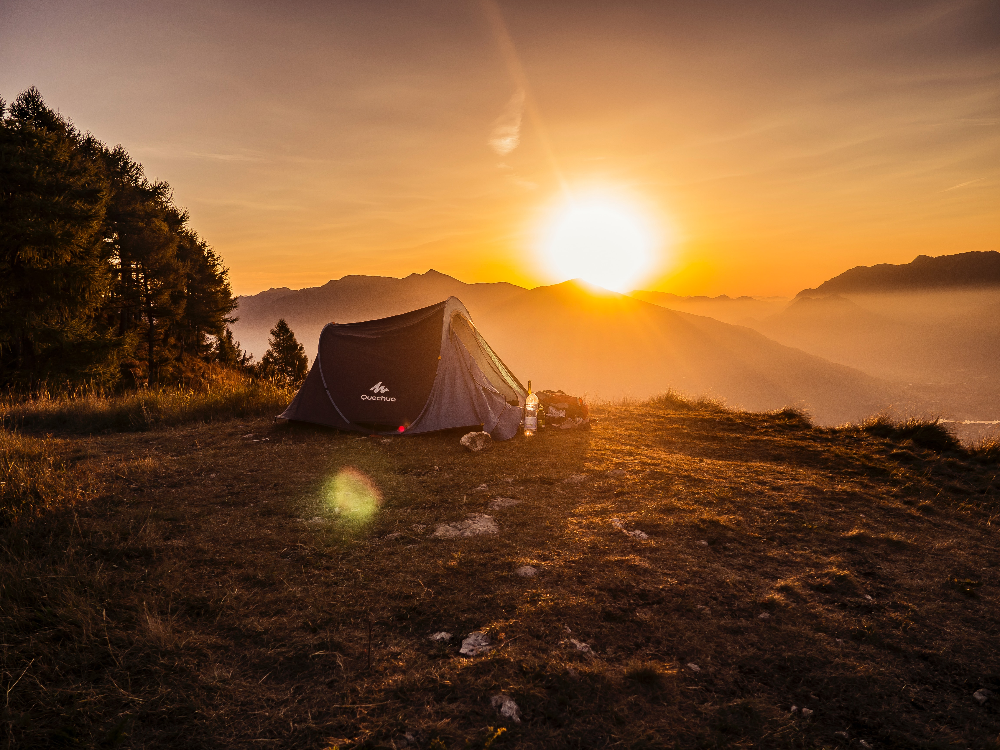

I love to go camping. I find that camping is a great way to enjoy and take in nature aswell as to have fun and relax with friends and family. Some of the things I like to do while camping include:
My favorite place to camping is in Jasper National Park. You can Find out more about Japser National Park here.
I have been playing soccer for my entire life. I played for a club until I was 12, when I got injured. Although ive been injured, I've still been able to enjoy soccer through various different ways, such as:
If you would also like to watch my favorite team, Liverpool Football Club play, you can watch them here.

I love keyboards. Ever since 2020, I have been collecting mechanical keyboards. I currently own around 10 or 11, most of which ive built myself. There are many different components that go into a keyboard, however the most important are the switches. The switches are the buttons themselves, and each switch has its own distinct feel and sound. Here is an ordered list of my favourite keyboard switches.
You can buy my favourite switches, Banana splits here on Amazon.